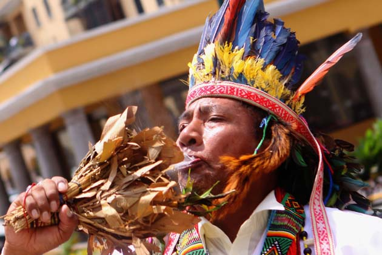

Creencia
Las creencias de los warao están conectadas con los espíritus llamados Hebu, provistos de razón, sexo y voluntad con los que puede ser positivos, negativos o neutros, según el comportamiento de los seres humanos. Hebu está presente en todos los objetos y aspectos de la vida de los warao, además son los encargados de controlar las tormentas, riadas, sequías… Dentro de los Hebu, encontramos los buenos y los malos. Los Hebu benignos los encontramos en pequeños fragmentos de cuarzo mientras que los malignos se encuentran presentes en la sangre menstrual. Los Hebu se encargan de que los warao vivan en armonía ofreciendo equilibro, paz y armonía a la comunidad. Estos espíritus se encuentran en armonía gracias al humo del Wina, que se confecciona envolviendo tabaco con la hoja de Manaca..
